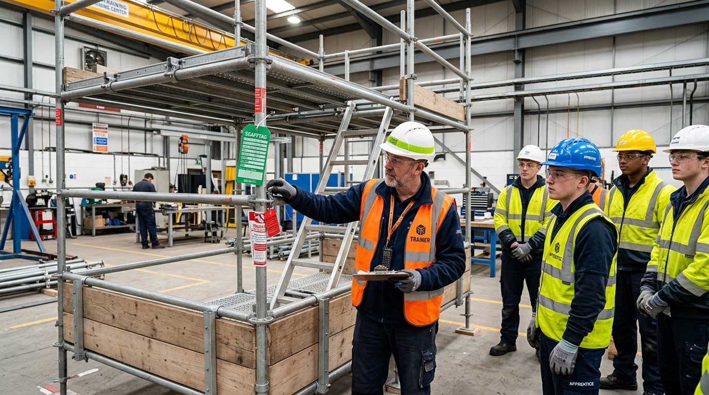

İskele Kurulum, Kontrol ve Söküm Elemanı Kimdir?
İskele kurulum elemanı; inşaat yapıları, endüstriyel tesisler, rafineriler ve tersanelerde çalışan personelin güvenle yüksekte imalat yapabilmesi için geçici iş iskelelerini statik kurallara, zemin taşıma kapasitesine ve üretici kurulum el kitabına göre eksiksiz monte eden, denetleyen ve söken nitelikli teknik meslek elemanıdır.
Yapı İşlerinde İş Sağlığı ve Güvenliği Yönetmeliği Ek-4 Madde 2 uyarınca, ön yapımlı bileşenlerden oluşan cephe iskelelerinin kurulum, kontrol ve söküm faaliyetleri yalnızca bu alanda MEB Hayat Boyu Öğrenme müfredatını tamamlamış ve e-Devlet tescilli yetki belgesine sahip personellerce yürütülebilir.
- Okuryazar Olmak: En az okuryazar olmak.
- Kimlik Belgesi: Nüfus cüzdanı, pasaport veya yabancı kimlik kartı.
- Yaş Sınırı: 18 yaşını doldurmuş olmak.
Eğitim Müfredatı & Uygulama Konuları
Programımız MEB Hayat Boyu Öğrenme Genel Müdürlüğü modüllerine tam uyumlu olarak 40 saatlik blok program halinde sunulmaktadır.
6331 Sayılı Kanun, Yapı İşleri İSG Yönetmeliği Ek-4, onaylı iskele kurulum el kitabı ve üretici uygunluk belgelerinin incelenmesi.
Zemin taşıma kapasitesinin değerlendirilmesi, taban plakası ve ahşap takoz yerleşimi, düşey ayaklarda terazi ve şakül kontrolü.
Dikey elemanlar, yatay kayıtlar, diyagonal (çapraz) takviyelerin doğru kilitlenmesi ve rüzgâr yükü dayanımları.
Çelik çalışma platformlarının yerleşimi, en az 15 cm tekmelik, 1 m ana korkuluk ve ara korkulukların montaj kuralları.
Cepheye ankraj dübeli yerleşimi, ankraj sayısı hesabı, açık ve kapalı cephelerde rüzgâr yükü sabitlemeleri.
Haftalık periyodik denetim kontrol listesi, 'Kullanılamaz Kırmızı' ve 'Güvenli Yeşil' etiket prosedürü, tersten sıralı emniyetli söküm.
Pratik İskele Kurulum İstasyonu ve Denetim Tatbikatı
Kursiyerlerimiz teorik eğitimlerinin yanı sıra flanşlı modüler iskele montaj istasyonunda ankrajlama, kamalama, şakül alma ve Scafftag güvenlik etiketlemesi aşamalarını birebir uygular.

Bu Belge ile Hangi Alanlarda Çalışabilirsiniz?
MEB onaylı ve e-Devlet kayıtlı İskele Kurulum, Kontrol ve Söküm Elemanı belgesi Türkiye genelinde ve yurtdışı şantiyelerinde geçerlidir:
 Resmi Belge Örneği
Resmi Belge Örneği
T.C. MEB Onaylı Kurs Bitirme Belgesi
Eğitim bitiminde kazandığınız sertifika, 6331 Sayılı İSG Kanununa tam uyumlu olup turkiye.gov.tr e-Devlet Kapısı üzerinden karekodlu ve barkodlu olarak ömür boyu doğrulanabilir.
Sektörde ve Şartnamelerde Geçen Diğer Tanımlar
İş dünyasında, taşeron şartnamelerinde ve kamu/özel sektör istihdam ilanlarında bu eğitim farklı unvan ve tanımlarla anılabilmektedir. Aşağıda yer alan tüm unvan ve tanımlar, resmi mevzuat çerçevesinde bu kurs programının yetki alanına girmektedir:
Şantiye Sahasında Birlikte Tercih Edilen Tamamlayıcı Programlar
Şantiye denetimlerinde ve kurumsal taşeronluk sözleşmelerinde, iskele montaj ekiplerinin sahada ceza veya iş durdurma yaşamaması için sıklıkla aşağıdaki mesleki yetkinlik belgeleri de aranmaktadır. Ekip kayıtlarında bu eğitimleri paket olarak tamamlayabilirsiniz:
İskele Ekibi Ceza ve Tasarruf Hesaplayıcı
Şantiyenizde iskele kuran veya söken belgesiz personel sayısını seçerek olası idari para cezası riskinizi ve 4+1 kampanyamız ile sağlayacağınız net tasarrufu görün:
Sıkça Sorulan Sorular (SSS)
🎁 4 Arkadaşını Getirene 1 Kurs Ücretsiz: Beraberinizde 4 iş arkadaşınızı kursa kaydettirdiğinizde kendi eğitiminiz tamamen ücretsiz hale gelir. Ekip kayıtlarında bütçe dostu büyük tasarruf sağlar.
İskele Ustaları ve Taşeron Saha Yorumları
Bugüne kadar eğitim verdiğimiz 24.800'ü aşkın montaj ustası ve 900'den fazla dış cephe taşeronunun bağımsız saha deneyimleri:
"Kartal'daki 28 katlı konut projesinde dış cephe taşeronuyuz. Ana müteahhit 'flanşlı iskele kuracak adamın MEB belgesi olmadan bir boru bile bağlatmam' dedi. 8 kişilik montaj ekibimizi kaydettik, sınavlar verildi ve barkodlar e-Devlet'e düştü. Projeyi geciktirmeden teslim ettik."
"Gebze OSB'de lojistik depo çelik ve iskele işlerini yapıyoruz. Akşamları mesai çıkışı online ders videolarını izledik, sınavı da internetten takılmadan verdik. İki gün sonra barkodlar e-Devlet sistemine tescil edildi. İşi durdurmadan, yevmiye kaybetmeden belgelerimizi aldık."
"Müfettiş denetiminde ilk baktıkları şey iskelenin ayağındaki ayar milleri ve yeşil Scafftag kontrol kartıydı. Belgeyi gösterdik, tekmelikler ve çapraz bağlantılar tam olduğu için teşekkür edip tutanak tuttular. Ceza yemeden işi bitirmek büyük huzur."
"Hem yüksekte çalışma hem iskele kurulum belgesini aynı anda aldık. Sahada iş ararken iki belgenin de e-Devlet'te görünmesi şantiye girişinde bizi direkt öne geçiriyor. İlgili danışman arkadaşlara hızları için teşekkürler."